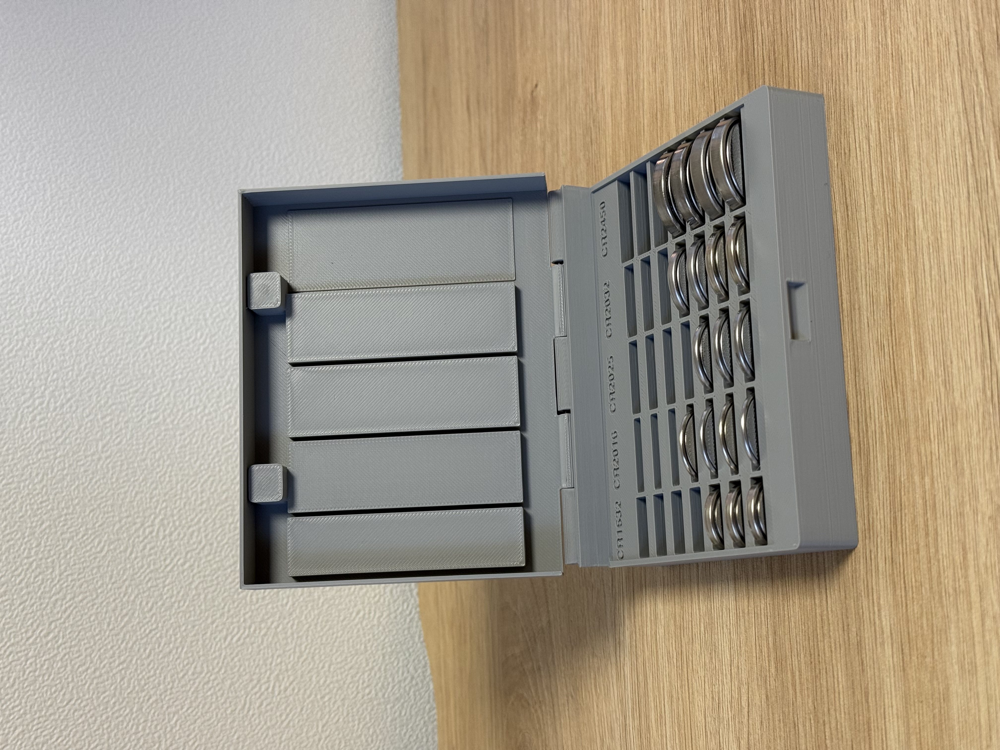

브라우저에서 설계하고 · STL로 다운로드내 물건에 맞는 크기.
01 / COIN CELL BOX · 실물 출력판 + 맞춤 편집기내 물건에 맞는 크기.
내가 정하는 수납.
필요한 종류와 수량을 고르면 형태가 따라옵니다.
설치나 계정 없이 편집하고, 내 프린터에서 출력하세요.

코인셀 보관함
서로 다른 코인셀을 한 상자에.
종류별 수량 · 자동 배치 · 경사 슬롯 · 매립 자석 잠금